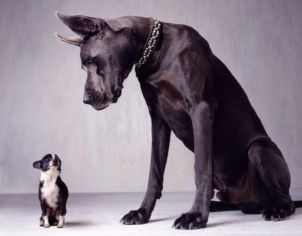

Можно, несмотря на сформировавшийся характер и укоренившиеся привычки животного.
Нет. Только звуки, поэтому перестаньте с ними разговаривать.
Да. Человек всегда может их понять. Но - заблуждение что, если собака виляет хвостом, то она добрая.
Память есть, но они не зациклены на ней, они живут сегодняшним днем. Логическое мышление присутствует.
В собачьей стае вылизывание служит знаком подчинения доминирующим членам стаи. Однако облизывая человека, собака, как правило, демонстрирует свою привязанность, но иногда вашему питомцу просто нравится ваш «вкус».
